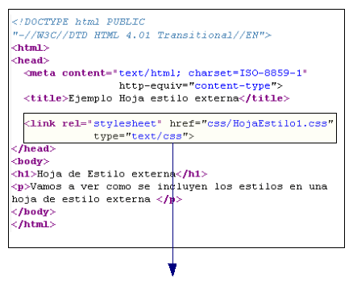
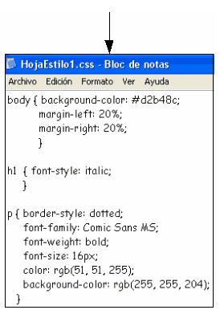

CSS EXTERNO
Una vez creada la estructura del documento y definidos sus contenidos a nivel semántico con HTML, podemos darle una apariencia y presentación personalizada mediante la utilización de CSS (Hojas de Estilo en Cascada / 'Cascade Style Sheets' ).
Con CSS podemos indicar el aspecto de cada elemento de la página, como por ejemplo: el tipo de letra de un título, el color con que se mostrará un enlace o el interlineado de un párrafo o una lista.
También veremos que CSS puede posicionar y dimensionar los distintos bloques de la página, de forma que podamos establecer la disposición de todos los elementos en la misma.
Solo haremos una breve introducción para ver los conceptos básicos de CSS que nos ayuden a entender mejor el diseño y la construcción de Sitios Web.

Formas y preferencias al aplicar estilos
Las Hojas de Estilo (o Estilos) se pueden incluir de 3 formas diferentes:
- Hoja de estilo externa: en un archivo diferente al documento HTMLL
¿Por qué se denominan hojas de estilos 'en cascada'? Pues porque estas tres formas de incluir estilos no son excluyentes y pueden combinarse (por ejemplo utilizando una hoja de estilos externa general e incluyendo estilos en línea en algunas etiquetas del documento). En caso de conflicto, prevalece el estilo más 'interno'.
Hoja de estilos externa
Vemos una hoja interna en una página HTML:

En este ejemplo vemos que se ha incluido en la sección HEAD de la página web una etiqueta <link>con los atributos:
- rel: es el tipo de relación. En este caso el valor es “stylesheet” (hoja de estilo)
- href: la dirección URL donde se encuentra la hoja. Es igual que cuando ponemos un enlace con la etiqueta . En este caso es una dirección relativa, y el fichero se encuentra en el directorio "css" y se llama "HojaEstilo1.css" (También valdría una dirección absoluta tipo: http://www.web.com/css/HojaEstilo1.css")
- type: tipo de archivo que enlazamos. En este caso el valor 'text/css' indica que es una hoja de estilos CSS en formato texto
En este caso, en vez de escribir las reglas de estilo que se aplicarán a este documento HTML en la sección HEAD, las incluiremos en un fichero de texto que crearemos:
- El nombre del archivo (y su dirección) debe coincidir con el incluido en el atributo 'href' de la etiqueta
<link>. - Debe guardarse con la extensión '.css', con codificación UTF-8 y en formato texto 'plano', como ocurría con las páginas HTML. No debemos usar Word o algún otro procesador que genera otro tipo de formatos.
- En ese fichero no se incluyen las etiquetas
<style></style>como hacíamos en las hojas internas. Por lo demás, las reglas de estilo se escriben igual que en ese caso.

Contenido de la hoja de estilos CSS externa
Algunas aclaraciones adicionales:
- La utilización de CSS externas confiere una serie de beneficios: estructura mejor las páginas Web al separar el etiquetado HTML de los estilos CSS, permite reutilizar las hojas para distintas páginas y facilita el mantenimiento de un sitio web. Un ejemplo: podemos cambiar el tamaño del texto de todos los párrafos modificando simplemente el valor de esa propiedad (font-size) en el selector 'p' de la hoja de estilo, sin tener que cambiar en cada etiqueta
<p>de cada página web. - En WordPress veremos que hay una nueva opción en su menú denominada "CSS Adicional". Esta opción junto a las 'Custom CSS' (CSS personalizada), que incluyen ya muchos themes, actúan como una hoja CSS externa donde definimos reglas de estilo para toda nuestra web. No tiene tanta flexibilidad porque se aplican a todas las páginas (no se puede elegir en cuáles), pero en combinación con los estilos inline, y los estilos a nivel de página (que incluyen algunos themes), es suficiente para hacer todo lo que necesitemos a nivel de presentación.
Comentarios en CSS
Al igual que en HTML, podemos incluir comentarios en nuestras hojas de estilo, tanto en las internas que hemos visto ahora, como en las externas que veremos a continuación.
Los comentarios son siempre recomendables para hacer luego más fácil la edición de los estilos en caso de que necesitemos cambiar algo con posterioridad. Nos pueden ayudar a recordar el motivo por el que dimos de alta una determinada regla, o en qué parte de nuestras páginas la utilizamos, o incluso el efecto que se consigue al aplicarla.
Los comentarios los incluiremos entre los caracteres /* (apertura) y */ (cierre), de esta forma:
/* aquí se escribe nuestro comentario...... */
Ejemplo:
<style> {
/* Introducimos este estilo en la página de contacto
para que los datos salieran más grandes y en otro color*/
p.contacto {
color: #008B8B;
font-size: 1.2em;
}
</style>